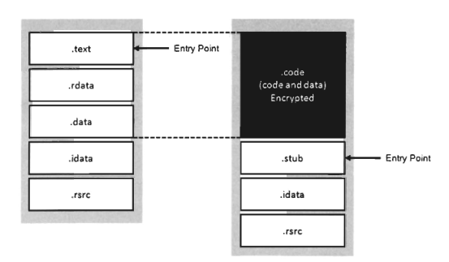
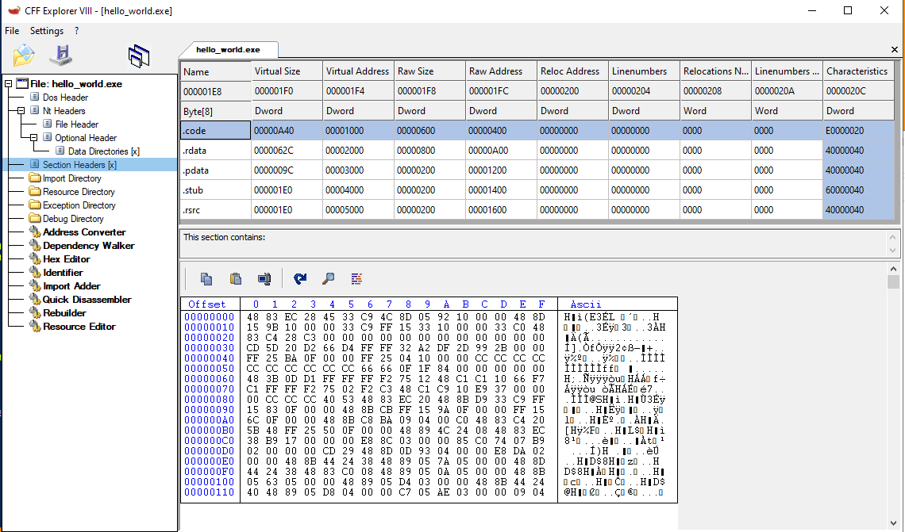
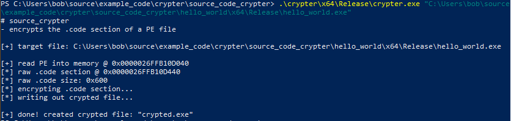
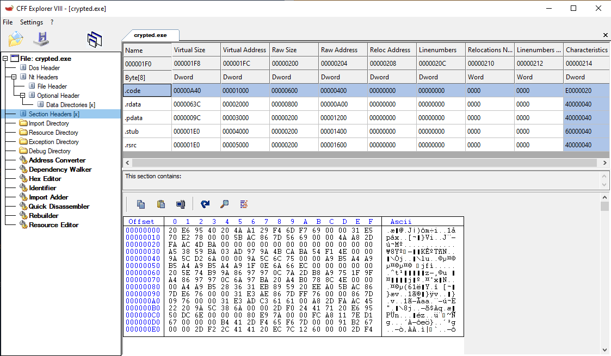
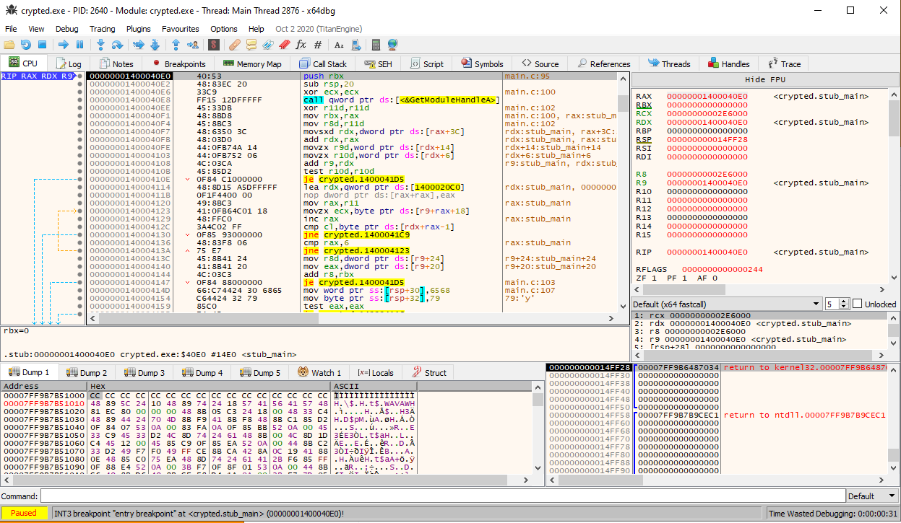
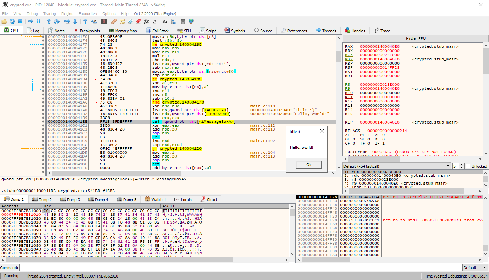

# Encrypt source code
This technique is outlined in Bill Blunden's book
The Rootkit Arsenal in Chapter 10.
All credit goes there.
This method requires having access to the source code of the binary you want to encrypt.
Within your source code file you define 2 new PE sections:
•
.code - this section will contain both the
.text and the .
data sections of the compiled binary
•
.stub - this section is where your decryption code will go (which decrypts
.code)
Upon compilation, you define the entry point of your program as the decryption stub -
.stub.
Using a separate file, you then encrypt the
.code section of your compiled binary.
Your binary's machine instructions (
.text) and its variables/data (
.data) are now encrypted and can't be read.
When the encrypted binary then executes, your
.stub section wil run and decrypt the
.code section and pass execution to it.
A diagram and the commented source code will help greatly in explaining this technique.
## Code
### hello_world
Here is my source code that will be crypted.
It's a simple "Hello, world!" program.
The
.code section contains the "Hello, world!" program.
The
.stub section contains code that will find the
.code section, decrypt it, and execute it.
/*
A simple "Hello, world!" program.
## Compile
Linker options for this code to work:
- /OPT:NOREF - Keep unreferenced data (Project > Properties > Linker > Optimization > References)
- /LTCG - Use link time code generation (Project > Properties > Linker > Optimization > Link Time Code Generation)
- Get rid of .reloc section
- /DYNAMICBASE:NO (Project > Properties > Linker > Advanced > Randomized Base Address)
- /FIXED (Project > Properties > Linker > Advanced > Fixed Base Address)
- /NXCOMPAT:NO - Disable DEP to modify executable memory (Project > Properties > Linker > Advanced > Data Execution Prevention (DEP))
- /INCREMENTAL:NO - Disable incremental linking (get compilation errors of so) (Project > Properties > Linker > General > Enable Incremental Linking)
## Problems
- because of the compiler options, I haven't figured out a way to use code in other libraries yet (libraries that need linking, e.g. printf() in stdlib, etc.)
*/
#include <Windows.h>
/* ------------------------------- START OF .code SECTION ------------------------------- */
/*
All code here will be in the ".code" section of the PE file.
This ".code" section is your normal program code, and what the source code crypter will encrypt.
*/
#pragma code_seg(".code") // create .code section (code from here & below is in the .code section)
#pragma section(".code", read, write, execute) // set .code section flags as R/W/X
#pragma comment(linker, "/SECTION:.code,RWE")
#pragma comment(linker, "/MERGE:.text=.code") // merge .text section into .code
#pragma comment(linker, "/MERGE:.data=.code") // merge .data section into .code
int main(void)
{
MessageBoxA(NULL, "Hello, world!", "Title :)", MB_OK);
return 0;
}
/* ------------------------------- END OF .code SECTION ------------------------------- */
/* ------------------------------- START OF .stub SECTION ------------------------------- */
/*
All code here will be in the ".stub" section of the PE file.
This ".stub" section decrypts the ".code" section and executes it.
*/
#pragma code_seg(".stub") // create .stub section (code from here & below is in the .stub section)
#pragma section(".stub", read, execute) // set .stub section flags as R/X
#pragma comment(linker, "/ENTRY:\"stub_main\"") // set entry point of .exe to stub_main() function
/*
Find ".code" section and return its VirtualAddress.
*/
LPVOID FindCodeSection(LPVOID image_base, DWORD* section_size)
{
LPVOID code_addr = NULL;
PIMAGE_DOS_HEADER dos_header = NULL;
PIMAGE_NT_HEADERS pe_header = NULL;
PIMAGE_SECTION_HEADER section_header = NULL;
dos_header = (PIMAGE_DOS_HEADER)image_base;
pe_header = (PIMAGE_NT_HEADERS)((DWORD_PTR)image_base + dos_header->e_lfanew);
section_header = IMAGE_FIRST_SECTION(pe_header);
// loop through sections until we find ".code" -> save its address & size and exit
for (int i = 0; i < pe_header->FileHeader.NumberOfSections; i++)
{
if (strcmp(section_header->Name, ".code") == 0)
{
code_addr = (LPVOID)((DWORD_PTR)image_base + section_header->VirtualAddress);
*section_size = section_header->Misc.VirtualSize;
break;
}
section_header += 1;
}
return code_addr;
}
void xor_bytes(unsigned char* bytes, DWORD size)
{
unsigned char key[] = { 'h', 'e', 'y' };
size_t key_length = sizeof(key);
for (DWORD i = 0; i < size; i++)
{
if ((bytes[i] == 0x00) || (bytes[i] == key[i % key_length]))
continue;
else
bytes[i] ^= key[i % key_length];
}
return;
}
int stub_main(void)
{
LPVOID image_base = NULL;
LPVOID code_section_addr = NULL;
DWORD code_section_size = 0;
image_base = (LPVOID)GetModuleHandleA(NULL);
code_section_addr = FindCodeSection(image_base, &code_section_size);
if (code_section_addr == NULL)
return 1; // unable to find .code section in file, so just exit out
// xor decrypt .code section
xor_bytes(code_section_addr, code_section_size);
// execute .code's main()
main();
return 0;
}
/* ------------------------------- END OF .stub SECTION ------------------------------- */
### encryptor
And here is my encryption program.
This encrypts the
.code section of the file above.
/*
Finds a .code section in a PE file and encrypts it.
*/
#include <stdio.h>
#include <Windows.h>
/*
Make sure to call free(file_buffer) after you're done.
*/
LPVOID ReadFileIntoBuffer(char* file_name, OUT DWORD* file_buffer_size)
{
LPVOID file_buffer = NULL;
BOOL b_ret = TRUE;
HANDLE h_file = NULL;
DWORD file_size = 0;
// open target file
h_file = CreateFileA(file_name, GENERIC_READ | GENERIC_WRITE, 0, NULL, OPEN_EXISTING, FILE_ATTRIBUTE_NORMAL, NULL);
if (h_file == INVALID_HANDLE_VALUE)
{
printf("[-] failed to open target file: %d \n", GetLastError());
goto cleanup;
}
// get file size
file_size = GetFileSize(h_file, NULL);
(*file_buffer_size) = file_size;
// create buffer to read file into
file_buffer = malloc(file_size);
// read file into buffer
b_ret = ReadFile(h_file, file_buffer, file_size, NULL, NULL);
if (b_ret == FALSE)
{
printf("[-] failed to read file into buffer: %d \n", GetLastError());
free(file_buffer);
goto cleanup;
}
cleanup:
if (h_file) CloseHandle(h_file);
return file_buffer;
}
/*
Find ".code" section and return its raw address.
*/
LPVOID FindCodeSection(LPVOID image_base, DWORD* raw_size)
{
LPVOID code_raw_addr = NULL;
PIMAGE_DOS_HEADER dos_header = NULL;
PIMAGE_NT_HEADERS pe_header = NULL;
PIMAGE_SECTION_HEADER section_header = NULL;
dos_header = (PIMAGE_DOS_HEADER)image_base;
pe_header = (PIMAGE_NT_HEADERS)((DWORD_PTR)image_base + dos_header->e_lfanew);
section_header = IMAGE_FIRST_SECTION(pe_header);
// loop through sections until we find ".code" -> save its address & size and exit
for (int i = 0; i < pe_header->FileHeader.NumberOfSections; i++)
{
if (strcmp(section_header->Name, ".code") == 0)
{
code_raw_addr = (LPVOID)((DWORD_PTR)image_base + section_header->PointerToRawData);
*raw_size = section_header->SizeOfRawData;
break;
}
}
return code_raw_addr;
}
void xor_bytes(unsigned char* bytes, DWORD size)
{
unsigned char key[] = { 'h', 'e', 'y' };
size_t key_length = sizeof(key);
for (DWORD i = 0; i < size; i++)
{
if ((bytes[i] == 0x00) || (bytes[i] == key[i % key_length]))
continue;
else
bytes[i] ^= key[i % key_length];
}
return;
}
BOOL WriteOutBufferToNewFile(LPVOID buffer, DWORD n_bytes_to_write, char* filename)
{
BOOL okay = TRUE;
HANDLE h_file = NULL;
BOOL b_ret = TRUE;
// create new file to write buffer out to
h_file = CreateFileA(filename, GENERIC_READ | GENERIC_WRITE, 0, NULL, CREATE_ALWAYS, FILE_ATTRIBUTE_NORMAL, NULL);
if (h_file == INVALID_HANDLE_VALUE)
{
printf("[error] failed to create new file to write to: %d \n", GetLastError());
okay = FALSE;
goto cleanup;
}
// write buffer data out to new file
b_ret = WriteFile(h_file, buffer, n_bytes_to_write, NULL, NULL);
if (b_ret == FALSE)
{
printf("[error] failed to write data into new file: %d \n", GetLastError());
okay = FALSE;
goto cleanup;
}
cleanup:
if (h_file) CloseHandle(h_file);
return okay;
}
int main(int argc, char* argv[])
{
printf("# source_crypter \n");
printf("- encrypts the .code section of a PE file \n\n");
if (argc < 2)
{
printf("incorrect arguments :/ \n");
printf("usage: crypter.exe [path/to/target/pe.exe] \n");
}
BOOL b_ret = TRUE;
char* target_file = argv[1];
char* out_filename = "crypted.exe";
LPVOID file_buffer = NULL;
DWORD file_size = 0;
LPVOID code_section_raw_addr = NULL;
DWORD code_section_raw_size = 0;
printf("[+] target file: %s \n\n", target_file);
// map PE into memory, find its .code section, and encrypt
file_buffer = ReadFileIntoBuffer(target_file, &file_size);
if (file_buffer == NULL)
goto cleanup;
printf("[+] read PE into memory @ 0x%p \n", file_buffer);
// find its .code section
code_section_raw_addr = FindCodeSection(file_buffer, &code_section_raw_size);
if (code_section_raw_addr == NULL)
goto cleanup;
printf("[*] raw .code section @ 0x%p \n", code_section_raw_addr);
printf("[*] raw .code size: 0x%x \n", code_section_raw_size);
// encrypt
printf("[*] encrypting .code section... \n");
xor_bytes(code_section_raw_addr, code_section_raw_size);
// write out modified PE into new file
printf("[*] writing out crypted file... \n");
b_ret = WriteOutBufferToNewFile(file_buffer, file_size, out_filename);
if (b_ret == FALSE)
{
printf("%d \n", GetLastError());
goto cleanup;
}
printf("\n[+] done! created crypted file: \"%s\" \n", out_filename);
cleanup:
free(file_buffer);
return 0;
}
## Demo
Here's the original file.
We can see that the .code section isn't encrypted.
First I run the encryptor.
This creates a file called
crypted.exe, which has encrypted the
.code section of my source file.
Now we run the encrypted file -
crypted.exe.
We can see that we start in
stub_main(), which is our decryption stub.
stub_main() then decrypts the
.code section and jumps to executing it.
